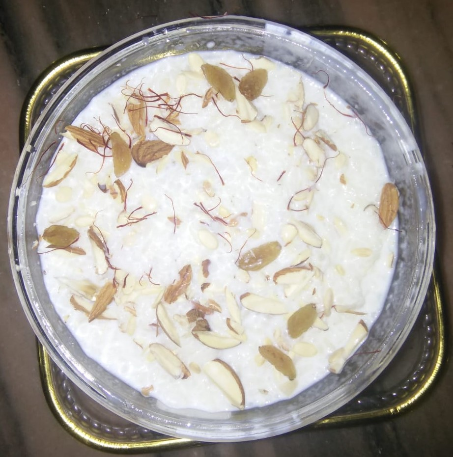

Indian Rice Pudding
Kheer or Rice Pudding is a popular Indian dessert. Indian Rice Pudding or Kheer is made by cooking rice with milk and sugar, and is enhanced by cardamom or saffron, and dried fruits and nuts like cashews, almonds, pistachios and raisins. Kheer is often made during festive occasions and as an offering during prayer ceremonies.
Ingrediants
- 1 cup of basmati rice
- 1 cinnamon stick
- 1/2 cup of sugar
- 1/2 tablespoon crushed saffron
- 1/2 tablespoon crushed caradamom
- 1/4 cup of chopped/sliced almonds, pistachios
- 1 tsp vanilla extract
- 4 cup milk
Instructions

- Rinse the rice under cold water, then place in the saucepan with water and a cinnamon stick. Bring to boil at medium heat and then reduce the flame to low and then cover the saucepan and simmer for 15 minutes or until the water is fully absorbed.
- Soak the saffron in 2 tablespoon of warm milk.
- When rice is cooked, add milk, sugar. vanilla to rice. Stir all to mix over medium heat and then reduce heat to low.
- Cook for 20 minutes until the mixture become creamy and thick.
- Make sure to scrape the bottom of the saucepan. This ensures that that the pudding does not burn at the bottom.
- When pudding is ready ransfer it to the serving bowl.
- Garnish pudding with sliced almonds and pistachios.
- Serve warm or chilled.
Precautions
- Do not add sugar before rice is tender.
- Continuously stir after adding vanila extract to the milk inorder to prevent burning of pudding at the bottom of the saucepan.